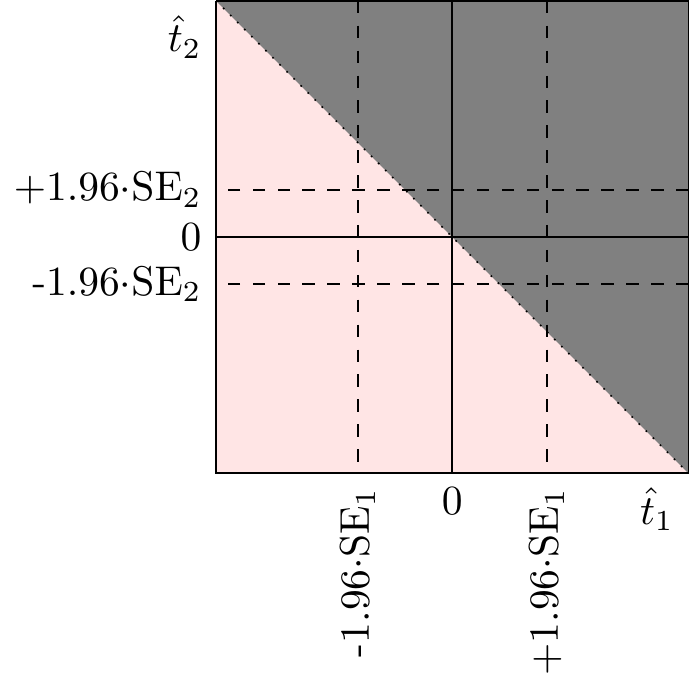
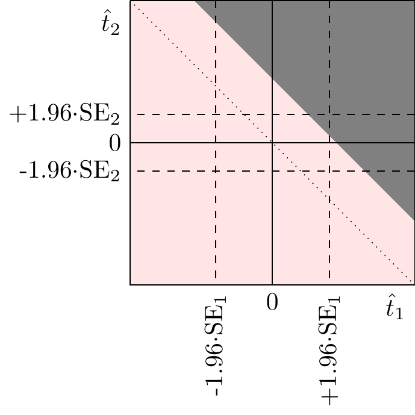
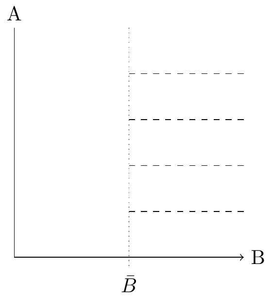
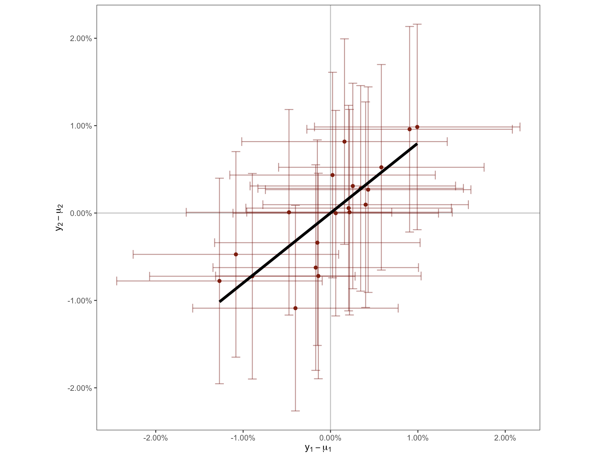
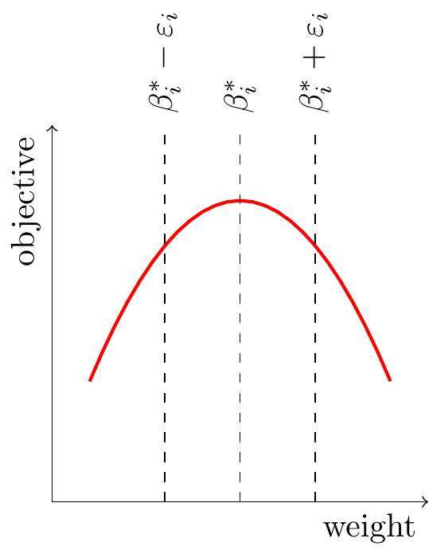
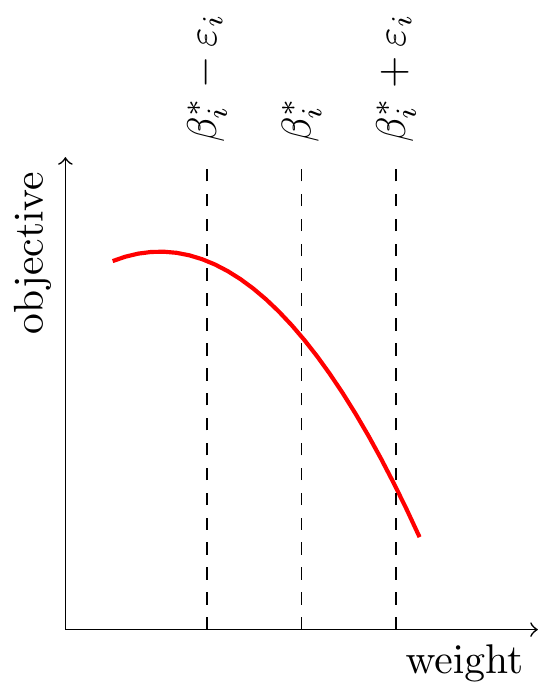

Introduction
I give a simple Bayesian way of thinking about experiments, and implications for interpretation and extrapolation.
Thanks to J. Mark Hou for comments. 
Setup: The canonical tech problem is to choose a policy to maximize long-run user retention. Because the policy space is high-dimensional it’s not feasible to run experiments on every alternative (there are trillions), instead most of the decision-making is done with human intuition based on observational data, and experiments are run to confirm those intuitions.
The inference problem. The basic problem of experimentation is to estimate the true effect given the observed effect. The problem can become complicated when we have a set of different observed effects, e.g. across experiments, across metrics, across subgroups, or across time.
Two common approaches are: (1) adjust confidence intervals (e.g. Bonferroni, always-valid, FDR-adjusted); (2) adjust point estimates based on the distribution (empirical Bayes). Both have significant drawbacks: my suggested approach is to let decision-makers make their own best-estimates of the true effects but provide them with an informative set of benchmark statistics so they can compare the results of any given experiment to the results from a reference group.1
The extrapolation problem. Given an effect on metric A what’s our best estimate of the effect on metric B? This problem is common to observational inference, proximal goals, and extrapolation.
There are three approaches to solving this: (1) using raw priors; (2) using correlation across units (surrogacy); (3) using correlation across experiments (meta-analysis). I argue that approach #3 is generally the best option but reasonable care needs to be taken in interpreting the results.
1 If the decision-maker is not technical then a data scientist or engineer can summarize for the decision-maker their best-estimate of the true impact on long-run outcomes, taking into account the evidence from the experiment and other sources of evidence, including the distribution of effects from other experiments.
I also briefly discuss two additional problems:
The explore-exploit problem. We would like to choose which experiments to run in an efficient and automated way. I think the technical solution is relatively clear but tech companies have struggled to implement it because good execution requires some discipline. I describe a simple algorithm that is not optimal but very simple and robust.
The culture problem. Inside tech companies people keep misusing experiments and misinterpreting the results, especially (1) running under-powered experiments, (2) selectively choosing results, and (3) looking at correlations without thinking about identification.
A common response is to restrict access to only a subset of experiment resuts. However this often backfires because (1) it is difficult to formally specify the right subset; (2) it reinforces a perception that experimental results can be interpreted as best-estimates of true treatment effects; (3) it reinforces a norm of selecting experimental results as arguments for a desired outcome. I think a better alternative is to explicitly frame the problem as one of predicting the true effect given imperfect evidence, and benchmark peoples’ prior performance in predicting the true effect of an intervention. (This section is unfinished, I hope to add more).
Setup
Firms choose their policy to maximize user retention. As a simplified model companies are choosing policies to maximize long-run retention (or revenue). A policy is, for example, a recommendation algorithm, or notification algorithm, or the text and images used in an advertisement or the UX on a signup page. Notice that policies are very high dimensional: there are millions or billions of alternatives, while we usually run only a few experiments.2
2 In fact variation in the success of tech platforms is primarily due to variation in the inflow of new users, not due to variation in retention rates. However growth in new users is driven by the attractiveness of the product and retention is a good proxy for this.
Experiments and formal causal inference methods not the primary sources of causal knowledge. People already have substantial knowledge about the effects of their decisions without either randomized experiments or natural experiments (IV, RDD, etc.). We built cathedrals, aeroplanes, welfare states, we doubled human life-expectancy, & WhatsApp grew to 1B users, all without randomized experiments or instrumental variables estimates. These achievements were all based on causal inference but informal causal inference, i.e. using our instinctive knowledge of how to process information without writing down or calculating the assumptions and distributions. Formal causal inference methods are useful but primarly insofar as they augment our already substantial causal abilities, and in most cases they clearly lag far behind humans intuitive ability to draw causal inferences. Inside companies the primary way people learn about causal relationships is raw data (e.g. dashboards) and common-sense reasoning about human behaviour.
Experiments only solve the low-dimensional problem. In most cases the dimensionality of the policy space is far higher than the dimensionality of experiment space, thus the responsibility for choosing policies is primarily human judgment. Humans come up with a few policy variants of interest, and then run experiments to compare their performance.34
3 Statistically the problem is analagous to drilling for oil: you drill test holes trying to understand the distribution underneath. A common algorithm for this is “Kriging” (the invention of Danie Krige in 1960 to model gold mining in South Africa) which in some cases is equivalent to Gaussian process regression.
4 There is a nice analogy to machine learning: computers have been able to outperform humans at low-dimensional prediction problems, e.g. linear regression, for the last 100 years, but only in the last 10 years have they caught up in high-dimensional problems like recognition of patterns in images, speech, and text. The implication is that humans have extraordinarily powerful ability to intuitively represent latent structures in high-dimensional data, and we shouldn’t expect simple algorithms to replace that ability.
5 For simplicitly assume the experiment doesn’t have any effect on variances or covariances of outcomes, the effects are typically small enough that it doesn’t matter.
Most questions related to experiments can be expressed as conditional expectations. A good workhorse model of experimentation is the following. Suppose we have two metrics #1 and #2. Taking some set of experiments we can think of three joint distributions: the observed effects, the true effects, and the noise:5
\[\utt{\binom{\hat{t}_1}{\hat{t}_2}}{observed}{effects} =\utt{\binom{t_1}{t_2}}{true}{effects (ATE)} +\ut{\binom{e_1}{e_2}}{noise} \]
For simplicity we’ll assume everything is normally distributed and has mean zero, then we get two very simple expressions for conditional expectations, and I’ll argue that these conditional expectations serve as answers to almost all interesting experimentation questions:
\[\begin{aligned} E[t_1|\hat{t}_1] &= \utt{\frac{\sigma_{t1}^2}{\sigma_{t1}^2+\sigma_{e1}^2}}{signal-noise}{ratio}\hat{t}_1 && \text{(posterior estimate of treatment effect, AKA shrinkage)} \\ E[t_2|\hat{t}_1] &= \utt{\rho_{t}\frac{\sigma_{t2}}{\sigma_{t1}}}{covariance}{of $t_1$ and $t_2$} \utt{\frac{\sigma_{t1}^2}{\sigma_{t1}^2+\sigma_{e1}^2}}{signal-noise}{ratio of $\hat{t}_1$}\hat{t}_1 && \text{(true effect on metric 2 given observed effect on metric 1)} \end{aligned} \]
Once we have a clear expression in terms of conditional expectations we can add on additional considerations: nonlinearities, fat-tailed distributions, strategic problems, etc..
1 The Inference Problem
There are a number of experiment inference problems that we often find difficult. We will discuss these as pure inference problems without worrying about strategic behaviour (e.g. peeking, cherry-picking).
- Estimate the treatment effect given the observed treatment effect.
- Estimate the long-run treatment effect knowing the short-run observed effect.
- Estimate the treatment effect, knowing the observed effect, and additionally the distribution of observed effects across some set of experiments.
- Estimate the treatment effect on a subgroup, knowing the observed effect, and additionally the distribution of observed effects across all other subgroups.
The textbook approach uses p-values. A common approach (NHST) is to treat the true effect as equal to the observed effect if the p-value is below 0.05, and otherwise treat the true effect as zero. This leads to all sorts of well-known difficulties.
Empirical Bayes estimates are often imperfect. We could instead calculate empirical-Bayes conditional expectations, \(E[\bm{t}|\hat{\bm{t}}]\), based on covariances from prior experiments, and treat those as the true effects. However the distribution of prior experiments is only a subset of the full information set available to the decision-maker, i.e. empirical Bayes is not Bayes, and very often there are idiosyncratic details about this particular experiment that are consequential.
My recommendation: report “benchmark” statistics. The ideal decision process lets humans make a judgment about estimated treatment effects given three ingredients:
Raw estimate. The point estimate and standard error.6
Benchmark statistic. We should also report a statistic comparing this observed effect to observed effects of other similar treatments. There are many ways of benchmarking and I think they are all convey the same basic information, e.g. the empirical-bayes shrunk estimate (and there are various shrinkage estimators), the FDR-adjusted p-value, or the fraction of statistically significant experiments. We have to use judgment in defining what a “similar” experiment is, and it’s important that we report to the end-user what class of similar experiments we’re using and how many we have. For the remainder of the section I will assume we are reporting an empirical-bayes shrunk estimate.
Idiosyncratic details. We should additional report any information about this treatment relative to the benchmark class, that could be relevant to its effect on this metric. E.g. (1) suppose this experiment only affects iPhone users then it is rational to heavily discount any outcomes on Android use unless they are highly significant; (2) suppose this experiment is a direct replication of a prior experiment, then we will likely wish to shrink our estimates towards that prior experiment rather than towards the mean of all experiments.
6 Equivalently, the point-estimate and p-value, or the upper and lower confidence bounds.
Benchmarking solves all the problems above. An empirical-Bayes shrunk estimate represents our best guess at the true treatment effect conditional on the experiment being drawn from a given reference class.
Useful shortcut: using the fraction of significant experiments to do shrinkage. A convenient rule of thumb for doing empirical Bayes shrinkage is to use the fraction of experiments that are statistically significant in some class. If the fraction is 5% then we should shrink all estimates to zero, if the fraction is 20% then we should shrink estimates by about 50%, and if the fraction is 1/2 then we should shrink estimates by about 20%. If everything’s Gaussian and every experiment has the same \(N\) then the optimal shrinkage factor is \(1-(\frac{1}{1.96}\Phi^{-1}(\frac{q}{2}))^2\), where \(q\) is the fraction of stat-sig experiments.
1.1 Strategic Problems
There are additionally some strategic problems in experiment interpretation.
Strategic stopping (“peeking”). An engineer will wait until an experiment has a high estimated impact, or low p-value, before presenting it for launch review. A common proposed remedy is that all experiments should be evaluated after the same length of time, or that engineers should pre-specify the length of experiments.
Selection of treatments (“winners curse”). An engineer will run a dozen variants and only present for launch review the best-performing one. A common proposed remedy is that every variant should be officially presented in launch reviews, even the poorly-performing ones.
Selection of metrics (“cherry picking”). An engineer will choose to show the experiment results on the metrics that are favorable, not those that are unfavorable. A common proposed remedy is that the set of metrics should be standardized for all launches, or that the set of evaluation metrics should be pre-specified by the engineer (AKA a pre-analysis plan).
I will argue that the commonly proposed remedies are highly imperfect fixes. These are complicated things to think about because the mix together issues of statistical inference and of strategic behaviour. In the discussion that follows I try to separate those out as clearly as possible.
1.2 Strategic Stopping
I will ignore dynamic effects. For simplicity assume that all effects are constant, so the length of an experiment effectively determines just the sample size of that experiment. I.e. I will ignore time-dependent and exposure-dependent effects.
Stopping rules are irrelevant to expected effect sizes. Suppose an experiment has a given estimate. Does it matter to your estimate of the true causal effect if you learn that the experimenter chose the sample size \(N\) by a data-dependent rule, e.g. continuing to collect data until the estimate was statistically significant? If you are estimating the true causal effect, \(E[t|\hat{t}]\) then it doesn’t matter, your posterior will be identical either way.7 A simple proof: suppose we observe two noisy signals, \(x_1\) and \(x_2\): \[\begin{aligned} x_1 &= v + e_1 \\ x_2 &= v + e_2 \\ v,e_1,e_2 &\sim N(0,1) \end{aligned}\] Suppose a peeker will report \(x_1\) only if \(x_1>0\), otherwise they will report \(x_1+x_2\). We can compare the expectation of \(v\) given the sum, depending on whther the engineer peeked: \[\utt{E[v|x_1+x_2]}{estimate}{without peeking} = \utt{E[v|x_1+x_2|x_1<0]}{estimate}{with peeking}\] This holds because \(x_1+x_2\) is a sufficient statistic for the distribution, i.e. \(x_1<0\) does not tell us any additional information. Note that peeking is not irrelevant to interpretation of a result if (1) the engineer can choose to report either \(x_1\) or \(x_2\), (2) the engineer can choose to report \(x_1\) alone after observing \(x_2\).8
7 This argument holds if the engineer always has to report the most-recent estimate. If they can choose to ignore later datapoints, and report an earlier result, this is essentially a “selection of metrics” case as below, and so the selection rule is relevant for interpretation.
8 See Deng et al. (2016) for a fuller argument that stopping rules are irrelevant, and a review of the prior literature.
Stopping rules would be relevant if we made decisions based on statistical-significance. A stopping rule would be relevant if we conditioned only on statistical-signficance instead of the full estimate. In other words the expected true effect, conditioning only on whether or not the estimated effect is statistically significant, will depend on the stopping rule. For example if people kept running experiments until they were significant then significant experiments would tend to have small effect sizes. However it is clearly bad practice to condition only on this binary piece of information when you have the full estimate, and if you have the full estimate then the stopping rule becomes irrelevant.
The optimal stopping rule is data-dependent. The discussion above took a stopping rule as given, we can also ask what’s the efficient stopping rule. It’s clear that a fixed length is inefficient: we should stop an experiment sooner if it does unexpectedly well or unexpectedly badly, in both of those cases the value of collecting more information has decreased because it’s less likely to change our mind about a launch decision. Thus enforcing a static or pre-specific experiment length will lead to inefficient decision-making.
Considering engineers’ incentives. Now consider the launch process as a game, with the engineers trying to persuade the director to launch their feature. Suppose the director’s ex post optimal strategy is to launch if \(E[t|\hat{t}]>0\), and suppose the engineers get a bonus whenever their feature is launched. In equilibrium the engineers will keep their experiments running until \(E[t|\hat{t}]>0\), which will cause a skew distribution: the distribution of posteriors will show a cluster just above the threshold. The director’s strategy is ex post optimal but it’s not an efficient use of experimentation resources. In this game the director would likely wish to pre-commit to a different threshold which induces more efficient effort by engineers. However a more direct solution would be to align engineers’ incentives with those of the director by rewarding them for their true impact, i.e. setting their bonuses proportional to \(\max\{E[t|\hat{t}],0\}\), instead of discontinuously rewarding them for whether or not they launched.
1.3 Selection of Treatments
If you learn an experiment is the top-performing variant it should change your asssessment. Suppose we have a result \(\hat{t}_1\), and we are estimating the true treatment effect, \(t_1\). If we learn that another variant has a lower treatment effect, \(\hat{t_1}>\hat{t}_2\), then it is rational to update our assessment of \(t_1\):
\[\utt{E[t_1|\hat{t}_1,\hat{t}_1>\hat{t}_2]}{assessment knowing}{it's winner}< \utt{E[t_1|\hat{t}_1]}{assessment}{given outcome} \]
This will hold whenever \(Cov(t_1,t_2)>0\), i.e. when we have some shared source of uncertainty about the two treatment effects.9 We can write a model for this, however conditioning on this binary information (whether a variant is the winner) is not an efficient way of using the information at your disposal.
9 Because \(t_1\) and \(t_2\) represent independent experiments we’ll have \(cov(e_1,e_2)=0\).
10 Andrews et al. (2019) describes some unbiased estimates for treatment effects conditional on them being winners. In general I would say this is an inefficient use of information, because we know much more about the distribution of treatment effects than just whether a specific variant is the winner. However that paper does argue that empirical Bayes estimates struggle when the sample-size is small or when we are estimating the tails of when variants are non-exchangeable, and in those cases the unbiased estimators may be useful.
It’s better to condition on the whole distribution. In almost all cases we know much more than whether \(\hat{t}_1\) is the winner, we also know the value of \(\hat{t}_2\), and then this reduces simply to the empirical Bayes problem, i.e. we simply wish to estimate: \[E[t_1|\hat{t}_1,\ldots,\hat{t}_n],\] and we can do that in the usual way.10 E.g. if we have a Normal prior over treatment effects then we can estimate \(\sigma_t^2\) from \(Var(\hat{t})\) and \(\sigma_e^2\). Once we have conditioned on \(\sigma_t^2\) then it becomes irrelevant whether variant 1 is the winner or not, i.e.: \[E[t_1|\hat{t}_1,\sigma_t^2]=E[t_1|\hat{t}_1,\sigma_t^2,\hat{t}_1>\hat{t}_2].\]
Put another way: the selection rule is irrelevant (just as the stopping rule is irrelevant) once we condition on the distribution of observed outcomes.
Implication: show the distribution. If we are worried that engineers are selecting variants based on their outcomes then the simplest and cleanest fix is to calculate the distribution of variants and use that to discount any experiment results, either explicitly with an empirical Bayes estimator, or implicitly by showing the decision-maker the distribution.
1.4 Selection of Metrics
Suppose engineers are selectively presenting the most favorable metrics. Suppose there are two outcome metrics from a single experiment, and the engineer will present whichever is the most favorable. Knowing this fact should rationally affect your judgment of the treatment effect on the presented metric: \[\utt{E[t_1|\hat{t}_1]}{assessment knowing}{only metric 1} > \utt{E[t_1|\hat{t}_1,\hat{t}_1>\hat{t}_2]}{assessment knowing}{metric 1 beats metric 2}\]
Implication: engineers should present all outcome metrics.
1.5 On Launch Criteria
Choosing weights on metrics for a launch decisions involves many considerations: network effects, noise, cross-metric proxy effects, and dynamic effects. In addition launch rules serve a bureaucratic role, and engineers will often want the launch rule to be public and without discretion. To make clear decisions it’s important to peel apart these layers, I recommend these steps:
Choose a set of final metrics. These are the metrics we would care about if we had perfect knowledge of the experimental effect. We can define tradeoffs between them, it’s convenient to express those tradeoffs in terms of percentage changes, e.g. we might be indifferent between 1% DAU, 2% time/DAU, and 5% prevalence of bad content.11
Choose a set of proximal metrics. These are the metrics on which we are confident we can detect our experiment’s effect, meaning the measured impact will be close to the true impact on these metrics (i.e. has a high signal-noise ratio). To determine whether a metric is moved we can use the fraction of a given class of experiments that have a statistically-significant effect on that metric: if the share is greater than 50% then we can be confident that the estimated effect is close to the true effect.
Identify conversion factors between proximal and final metrics. These tell us the best-estimate impact on final metrics given the impact on proximal metrics. Conversion factors can be estimated either from (a) long-running tuning experiments; (b) a meta-analysis of prior experiments with similar designs.
A final linear launch criteria can then be expressed as a set of conversion-factor weights applied to each of the proximal metrics.12
11 Arguably revenue or profit is a more truly final metric, and these are just proxies, but these are probably close enough to final for most purposes.
12 For derivation see Cunningham and Kim (2019).
1.6 Comparing Launch Rules



I find it useful to visualize different launch rules. For simplicity suppose our utility function is linear: we have two metrics, 1 and 2, and we care about them equally: \[U(t_1,t_2)=t_1+t_2.\] But we only observe noisy estimates \(\hat{t}_1,\hat{t}_2\).
Kohavi et al. (2020) recommend a stat-sig shipping rule. They say (p105):
- If no metrics are positive-significant then do not ship
- If some are positive-significant and none are negative-significant then ship
- If some are positive-significant and some are negative-significant then “decide based on the tradeoffs.
I represent this in the first diagram (but I treat condition 3 as a non-ship). The dotted line represents \(\hat{t}_1+\hat{t}_2=0\).
The stat-sig shipping rule has strange consequences. You can see that this rule will recommend shipping things even with negative face-value utility (\(U(\hat{t}_1,\hat{t}_2)<0\)), when there’s a negative outcome on the relatively noisier metric. This will still hold if we evaluate utility with shrunk estimates, when there’s equal proportional shrinkage on the two metrics, but if there’s greater shrinkage on the noisier metric it will not hold.
Linear shipping rules are better. In the margin I illustrate (1) a rule to ship wherever the sum is positive; (2) a rule to ship wherever the sum is stat-sig positive. I have drawn the second assuming that \(cov(\hat{t}_1,\hat{t}_2)=0\). With a positive covariance the threshold would be higher.

The Leontief sandwich. I assumed above that our true utility function is linear. In fact tech companies often explicitly give nonlinear objective functions to teams, e.g.: \[\begin{aligned} \max_k &\ A(k) && \text{(goal)} \\ \text{s.t.} &\ B(k)\leq \bar{B} && \text{(guardrail)} \end{aligned} \]
This is illustrated at right, the indifference curves are L-shaped so I’ll call it a Leontief utility. Having Leontief preferences can cause some unintuitive decision-making, in particular the tradeoff between \(A\) and \(B\) will varies drastically depending on your location. One important observation is that if your goal is assessed at the end of some time-point (e.g. at the end of the half) then optimal launch decisions will depend on your future expectations, e.g. you’d be willing to launch a feature that boosts A at the cost of B only if you expect a future launch to make up that deficit in B.
In practice I think it’s useful to think of this nonlinear objective function as sitting in the middle of the hierarchy of an organization, with approximately linear objective functions above and below it, i.e. a “Leontief sandwich.”
At the highest layer the CEO (or shareholders) care about all the metrics in way that is locally linear, i.e. they do not have sharp discontinuities in how they assess the company’s health. At the lowest layer engineers and data scientists are trying to make individual changes that achieve the Org’s overall goals, but because they only account for a small share of the overall org’s impact they can treat their objectives as locally linear (& likewise in a value function we make linear tradeoffs between objectives because we’re in such a small region). Finally even for orgs which have nonlinear objective functions it’s often reasonable to think of the nonlinearities as “soft”, e.g. if an org comes in slightly below a guardrail the punishment is slight, and if they come in above the guardrail then they will be rewarded. This softening makes the effective objective function much closer to linear, and so I think for many practical purposes it’s reasonable to start with a linear objective function.
2 The Extrapolation Problem
Many problems are predicting the effect one one metric (downstream) given the effect on another metric (upstream). There are a variety of situations in which we cannot measure the effect on the downstream metric, either because it has high noise, or it is in the future:
| upstream | downstream |
|---|---|
| short-run revenue | long-run revenue |
| click | purchase |
| engagement on content | response to survey (“do you like this content?”) |
| engagement on content | retention |
| exposure to content | retention |
| time on surface X | time on all surfaces |
| purchase | repeat purchase |
| wait-time for delivery | retention |
| price | quantity purchased |
For concreteness we will treat the problem of predicting the long-run (LR) effect of an experiment on DAU from its short-run (SR) estimated effects on all metrics:
\[E[\utt{\Delta\text{DAU}_{LR}}{true long-run}{effect on DAU} | \utt{\Delta \widehat{\text{DAU}}_{SR}, \ldots, \Delta\widehat{\text{engagement}}_{SR}}{estimated short-run effects}{}] \]
There are two obvious ways to calculate this:
Meta-analysis. We can run a regression across prior experiments: \[\Delta\widehat{\text{DAU}}_{LR} \sim \Delta \widehat{\text{DAU}}_{SR} + \ldots + \Delta\widehat{\text{engagement}}_{SR} \]
However the coefficients will be biased if we use on the LHS the observed long-run DAU, instead of the true long-run DAU. This bias is often large, and in fact if you run a bunch of AA tests (where the causal effect is zero) you’ll find strong significant relationships between short-run and long-run impacts. I discuss below ways in which to adjust for this bias.
Observational Inference. We can run a regression across users: \[\text{DAU}_{LR} \sim \text{DAU}_{SR} + \ldots + \text{engagement}_{SR} \]
We can look at what is most predictive of long-run DAU across users. The problem here is obviously endogeneity, and so it’s worth spending time drawing a DAG and running robustness tests to carefully think through the sources of variation we’re using.
2.1 With Meta-Analysis
With \(n\) metrics we can write the underlying model as: \[\utt{\pmatrix{\hat{t}_1\\\vdots\\\hat{t}_n}}{observed}{effects} = \utt{\pmatrix{t_1\\\vdots\\t_n}}{true}{effects} +\utt{\pmatrix{e_1\\\vdots\\e_n}}{noise}{(=user variation)} \]
Here we are treating \(\Delta \text{DAU}_{SR}\) and \(\Delta \text{DAU}_{LR}\) as two different metrics, but for some experiments we only observe the first. We thus want to estimate the effect on long-run retention (DAU\(_{LR}\)) given short-run metrics. \[E[\Delta\text{DAU}_{LR} | \Delta \widehat{\text{DAU}}_{SR}, \ldots, \Delta\widehat{\text{engagement}}_{SR}] \]
where \[\begin{aligned} \Delta\text{DAU}_{LR} &= \textit{true}\text{ effect on long-run daily active users (AKA retention)}\\ \Delta\widehat{\text{DAU}}_{SR} &= \textit{estimated}\text{ effect on short-run daily active users} \\ \Delta\widehat{\text{engagement}}_{SR} &= \textit{estimated}\text{ effect on short-run engagement} \end{aligned} \]
Running a Regression will be Biased. The obvious thing to do is run a regression across experiments: \[\Delta\widehat{\text{DAU}}_{LR} \sim \Delta \widehat{\text{DAU}}_{SR} + \ldots + \Delta\widehat{\text{engagement}}_{SR} \]
However this will be biased. The simplest way to demonstrate the bias is to show that even with AA tests (where there is zero treatment effect on either metric) we will still get a strong predictive relationship between the observed treatment effects on each of the two metrics (see figure).

The bias is because in the regression our LHS variable is estimated retention (\(\Delta\widehat{\text{DAU}}_{LR}\) instead of \(\Delta\text{DAU}_{LR}\)), and the noise in that estimate will be correlated with the noise in the estimates of short-run metrics. In the linear bivariate case (where we have just one RHS variable) then we can write: \[\begin{aligned} \ut{\frac{cov(\hat{t}_2,\hat{t}_1)}{var(\hat{t}_1)}}{regression} = \utt{\frac{cov(t_2,\hat{t}_1)}{var(\hat{t_1})}}{what we}{want to know} + \ut{\frac{cov(e_2,e_1)}{var(\hat{t}_1)}}{bias} \end{aligned} \]
The bias will be small if the short-run metrics have high signal-noise ratios (SNR), \(\frac{var(t_1)}{var(e_1)}\gg 0\). A simple test for SNR ratio is the distribution of p-values: if most experiments are significant then the SNR is high. However in the typical case (1) \(\Delta \widehat{\text{DAU}}_{SR}\) is the best predictor of \(\Delta \widehat{\text{DAU}}_{LR}\); and (2) \(\Delta \widehat{\text{DAU}}_{SR}\) has a low signal-noise ratio (i.e. few outcomes are stat-sig). This means the bias is large, and so results are hard to interpret.
2.1.1 Adjusting for the Bias
Here are some alternatives:
Run a regression just using the high-SNR metrics. We could just drop \(\Delta\widehat{\text{DAU}}_{SR}\) as a regressor because of the bias, but we lose predictive power (\(R^2\)) so it’s hard to know when this will be a good idea without an explicit model.
Adjust for bias in linear estimator. If we want a linear estimator then we can estimate and adjust for the bias. \[\begin{aligned} \utt{\frac{cov(t_2,\hat{t}_1)}{var(\hat{t_1})}}{BLUE for}{$t_2$ given $\hat{t}_1$} &= \frac{cov(t_2,t_1)}{var(\hat{t}_1)} = \ut{\frac{cov(\hat{t}_2,\hat{t}_1)}{var(\hat{t}_1)}}{regression result} - \utt{\frac{cov(e_2,e_1)}{var(\hat{t}_1)}}{observable}{variables} \end{aligned} \]
If everything is joint normal then the expectation is itself linear, and so this will be optimal. In practice the true distribution of effect-sizes is somewhat fat-tailed, which imply that the conditional expectation will be nonlinear in the observables. Nevertheless I think this is a good start. (One other complication is that the SNR is more complicated to calculate when experiments vary in their sample size).13
Use experiment splitting. You can randomly assign users in each experiment to one or other sub-experiments. You now effectively have a set of pairs of experiments, each of which has experiments with identical treatment effects (\(\Delta \text{DAU}_{LR}\)) but independent noise. Thus you can run a regression with LHS from one split, and RHS from other split, and you’ll get an unbiased estimate. Additionally you can easily fit a nonlinear model (Coey and Cunningham (2019) has details of how to do an experiment-splitting).14
Run a regression just using the strongest experiments. If the distribution of experiments is fat-tailed then the strongest experiments will have higher SNR, and so lower bias. A worry about this is that you’re only estimating the relationship from outliers, so nonlinearities are more of a worry. At the same time the assumption of fat-tailed treatment-effects gives reason to believe the expectation will be nonlinear. (This is roughly how I interpret the Peysakhovich and Eckles (2018) experiments-as-instruments paper. They propose using L0 regularization and experiment-splitting cross-validations, which I think effectively selects the strongest experiments.)
13 See Cunningham and Kim (2019), and see Tripuraneni et al. (2023) for a slightly different setup with weaker assumptions. Bibaut et al. (2024) shows the relationship with LIML.
14 Bibaut et al. (2024) gives another formalization in terms of jacknife-instrumental-variable (JIVE).
Choosing a Reference Class. It is important to think about the reference-class of experiments which we use to calibrate our estimates. The long-run DAU prediction can be though of as an empirical-bayes estimate, which is our best estimate conditional on the experiment being a random draw from this class of experiments.
In many cases a company’s experiments will naturally fall into different classes: e.g. some have a very steep relationship between engagement and DAU, others have a very flat. It’s important to both (1) visualize all the experiments, so that a reference-class can be chosen sensibly; (2) calculate the \(R^2\) across experiments, so we can have some sense of confidence in our extrapolation.
2.2 Observational Inference
What we want to know: Given the short-run effect of a content experiment on engagement we want to predict the long-run effect on DAU. We can start with a simple regression along these lines: \[\utt{\text{DAU}_{u,t+1}}{long-run}{retention} \sim \utt{\text{engagement}_{u,t}}{short-run}{engagement}\]
We could set up a DAG and discuss the surrogacy conditions. The condition are that (1) all effects of an experiment on DAU are via short-run engagement; and (2) there is no unobserved factor which affects both SR engagement and LR DAU:
\[\xymatrix{ & *+[F-:<6pt>]\txt{unobserved}\ar@{.>}[d] \ar@{.>}[dr] \\ *+[F]{\text{experiment}} \ar[r] \ar@{.>}@/_1pc/[rr] & *+[F]{\text{SR engagement}}\ar[r] & *+[F]{\text{LR DAU}} } \]
In fact we know that engagement doesn’t literally lie on the causal chain, instead we think engagement is a good proxy for content which might lie on the causal chain.
In any case I find the following setup an easier way to think about the assumptions necessary for identification:
We can write it out a simple structural model as follows (for compactness I leave out coefficients):
\[\begin{array}{rcccccccc} \text{engagement}_{u,t} &=& \utt{\text{temperament}_{u}}{user-specific}{propensity to engage} &+& \utt{\text{mood}_{u,t}}{time-varying}{mood/holiday/etc.} &+& \utt{\text{content}_{u,t}}{content seen}{on platform} &+& \utt{\text{distractions}_{u,t}}{other platform effects}{e.g. messages, notifs}\\ \text{DAU}_{u,t} &=& \text{temperament}_{u} &+&\text{mood}_{u,t} &+&\utt{\sum_{s=1}^\infty\beta^s\text{content}_{u,t-s}}{prior experience}{w content} &+&\text{distractions}_{u,t}\\ \end{array} \]
Some general observations:
- We would get a more credible estimate if we could directly measure content quality. E.g. if we could use the quality of the content available to the user on the RHS, instead of just their engagement on that content. This wouldn’t get perfect identification but it would help.
- The relative shares of variation in the RHS is important. If most of the variation in engagement is due to variation in content (i.e. high \(R^2\) from content), then we don’t need to worry much about confounding from other effects. We can think of introducing control variables as a way of increasing the share of varation in engagement due to content.
- We should control for distractions. If we have measures of app-related events that don’t affect content-seen but do affect engagement, e.g. notifications, messages, then we should use those as controls. This will increase the relative share of variation in engagement due to content.
- Controlling for pre-treatment outcomes changes variation used. If we control for
engagement\(_{t-1}\) this will change the relative contribution of each factor in the variation of engagement. Specifically it will reduce the share of the terms with higher autocorrelation. Thus by definitiontemperamentwill reduce its contribution. However it’s unclear whethermoodorcontenthas higher autocorrelation, and so controlling for pre-treatment could either increase or decrease the relative contribution ofcontent. It’s probably worth doing some simple decomposition of variation in engagement into (1) user, (2) content, and (3) mood (the residual), both statically and over time. - Univariate linear prediction is usually pretty good. In my experience you can get a fairly good prediction of most user-level metrics with a linear function of the lagged values. If you use a multivariate or nonlinear function you’ll get a better fit but only by a small amount (one exception: when predicting discrete variables like DAU it’s useful to use a continuous lagged variable like time-spent). So I’m skeptical that adding more regressors or adding nonlinearity will significantly change the estimates or the credibility of the estimates.
- Estimand is not \(\beta\) but \(\frac{1}{1-\beta}\). Suppose we see that 1 unit of engagement causes a certain increase in DAU over the following weeks. We then want to apply that estimate to an experiment which permanently increases engagement by 1 unit. We thus should take the integral over all the subsequent DAU effects. In the simple exponential case the effect of a shock at period \(t\) on DAU at period \(t+s\) will be \(\beta^s\), and so the cumulative effect on all subsequent periods will be \(1+\beta+\beta^2+\ldots=\frac{1}{1-\beta}\).
- Autocorrelation in content makes things messier. If there is significant autocorrelation in content then the interpretation of
DAU~engagementis more difficult. E.g. if we see that engagement on \(t\) is correlated with DAU on \(t+1\) this could be because either (1) content on \(t\) content caused the DAU on \(t+1\), or (2) good content on \(t\) is correlated with good content on \(t+1\), which in turn causes DAU on \(t+1\). I don’t think controlling for pre-treatment levels or trends solves this.
Appendix: The Explore-Exploit Problem
What experiments should you run? The prior sections have been just about interpretation of existing experiments, we can now turn to the choice of which experiment to run. The space of all possible experiments is immensely high dimensional and thus most of this process uses human judgment. However in some cases we can reduce the space to a small number of dimensions and use an algorithm to explore that space. We can call this process a “bandit” or “explore exploit” or “adaptive experimentation” or “gradient descent” problem (though gradient descent is typically pure exploration with no exploitation).
Typical cases for explore-exploit:
- Tuning parameters on a recommendation algorithm to maximize retention.
- Tuning parameters on video or audio streaming to maximize satisfaction and retention.
- Tuning parameters on ad bidding to maximize net profit.
- Exploring different components of quality in recommendations:
- Content quality
- Producer quality
- User-topic interest
I will focus just on tuning parameters in a recommendation algorithm.
Tuning projects have a high failure rate. I should say that I am not an expert on explore-exploit algorithms and many others have deeper professional experience than I do. However I have seen multiple tuning projects either abandoned because of complexity, or fail to find a set of parameters which yields a non-trivial improvement on metrics. Speaking broadly I think the problems were overly-complicated designs, under-powered experiments, lags in effects, ill-defined outcome variables, or improper use of short-term proxies for long-term outcomes.

Recommendation: a simple tuning algorithm using weather stations. Here is a crude but easy-to-execute method for dynamically optimizing parameters. It’s less efficient than other algorithms but it’s easy to describe, easy to implement (it uses the existing AB-test system), and easy to visualize and see that it’s working as intended. In short: for each parameter we set up two permanent “weather stations” treatments: 1/3 of users get a slightly higher value, and 1/3 of users get a slightly lower value.
Suppose we have \(n\) parameters to tune \((\beta_1,\ldots,\beta_n)\): we run \(n\) orthogonal experiments, each of which partitions the all users into 3 equal-sized buckets, with either (1) \(\beta_n=\beta_n^*\) , (2) \(\beta_n=\beta_n^*-\varepsilon_n\), (3) \(\beta_n=\beta_n^*+\varepsilon_n\), where \(\beta_n^*\) is the current production level of \(\beta\). If \(n=2\) then users would be assigned as such:

| \(\beta_1-\varepsilon_1\) | \(\beta_1\) | \(\beta_1+\varepsilon_1\) | |
|---|---|---|---|
| \(\beta_2-\varepsilon_2\) | 1/9 | 1/9 | 1/9 |
| \(\beta_2\) | 1/9 | 1/9 | 1/9 |
| \(\beta_2+\varepsilon_2\) | 1/9 | 1/9 | 1/9 |
The size of the perturbations \(\varepsilon_i\) are easy to adjust dynamically as the data comes in: we can start small and keep increasing until we see a stat-sig difference in the outcome. We monitor the trajectory of each bucket continuously, and once/month make a formal decision about whether to adjust the production parameters, e.g. increasing \(\beta_n\) to \(\beta_n+\varepsilon_n\) or lowering it to \(\beta_n-\varepsilon_n\). When interpreting these experiments it is important to monitor the full trajectory of outcomes over time, ideally a visualization will show a large matrix of trajectories, with one cell for each combination of experiment-bucket and metric.
We can use the data generated to explore other aspects: (1) whether there are significant interaction effects between the different experiments (e.g. if the users who have both increasing \(\beta_1\) and \(\beta_2\) have a different effect), and (2) whether there are significant heterogeneities in outcomes across subgroups.
This is the simplest general framework I know of for continuous optimization of a set of parameters. I think that simplicity is by far the most important criterion: I have seen a long history of optimization projects get tangled in complexity and fail. Because of the past history of failures I think it’s crucial to do the simplest and most transparent thing at each point until you have a steady rhythm and track record of making progress.
The hard work is the choice of parameters to tune. Once you have a small set of parameters to tune it’s not too hard to find the global optimum. However in typical problems there are thousands or millions or billions of possible parameters, how should you choose which ones to tune?
Appendix: Difficult Cases
Example: Selection of experiments. Your team goal is to maximize podcast_time, and you want to know what other teams are hurting that metric. You find the 10 experiments with the biggest negative effect. Should you take their estimated effects at face value?
- Classical advice is to adjust p-values for the number of experiments you selected from (Bonferroni correction). But from a Bayesian point of view it’s irrelevant whether these 10 experiments are taken from a pool of 10 or 1000 experiments.
- The set of experiments is informative about appropriate shrinkage. You can use the pool of experiments to estimate the appropriate shrinkage, \(E[t|\hat{t}]\). E.g. if we assume a Normal distribution we can quickly calculate a shrinkage estimate from the average effect and from the fraction of experiments that are statistically significant.
- Shrinkage should depend on plausibility of the effect. You can look at how much each of these experiments moves their primary outcomes. Suppose a music-ranking experiment decreases podcast time-spent by 0.4s, and increases music time-spent by 0.2s: the more-than-proportional side-effect seems unlikely, so there is reason to discount (shrink) the likely effect significantly.
- Shrink less if the effect is very significant. If the effect-size is 4 standard-errors then, because the distribution of treatment, this is much more likely to be due to treatment than to noise, and so the effect does not require much shrinkage.
Example: Selection of Experiments #2. An engineer has an experiment with effect +1% (±0.5%) on your goal metric. They mention that they ran 20 other experiments, and this is the experiment with the biggest effect.
Recommendation: shrink heavily towards the average effect.
Finding out about other experiments with smaller effects means you should shrink more. Finding out about the 20 other experiments is evidence about the size of the typical effect, and you should shrink towards that average. If the engineers are only showing you their best ones, that is reason to shrink your estimates.
It matters how selection was done. Suppose the engineer chose the highest-effect one by chance, not intention. You should still shrink by the same amount: the distribution is evidence, not the selection rule. However if they had some independent reason for expecting this experiment would be the most effective, that is relevant evidence.
Example: Subgroup Outcomes. You see that the overall time-spent of a feature holdout is -3.5% (±0.5%), but in Korea it’s -9%(±2%). How seriously should you take the Korean effect?
Recommendation: take it seriously, because (a) very significant, and (b) there is high between-country variance.
Is this effect plausible? I.e., do we have reason to expect the effect of this feature to vary a lot by country, and in particular in Korea? We do generally think user behaviour varies a lot by country.
How significance is this effect? The effect is 9 standard-errors – i.e., extremely significant – which makes it much less likely to be noise (\(p\)=.00001).
How much variance in effect is between-country vs within-country? Suppose we see that 1/2 of the countries have effects that are significantly different from the global average effect, this implies that there is a fair amount of variance in effect-sizes, and so reasonable that Korea should be such an outlier.
Example: Multiple Outcomes.Your experiment increases music_time, which you expected, and increases podcast_time, which you did not expect.
Implication: The positive effect on podcast_time is bad news about music_time. If outcomes are positively correlated across units but not across treatments then: \[\frac{dE[t_1| \hat{t}_1,\hat{t}_2]}{d\hat{t}_2} < 0.\] In this case good news about one outcome is bad news about the other.
Example: Multiple Outcomes #2. You run an experiment on movie ranking intended to increase watches, and it works. You additionally see an increase in comments-given. Should the increase in comments give you more confidence or less confidence in the increase in likes?
Recommendation: Good news is bad news, if the side-effect is unexpected.
- If the experiment was expected to increase both metrics - e.g. by increasing overall time spent on feed - then this is good news: it is additional evidence for the effect on likes.
- If the experment was expected to have a null or negative effect on comments – e.g. by boosting like-able posts at the expense of comment-able posts – then this is bad news: the positive effect on comments is likely due to noise, and it should make us expect greater noise in the measure of likes.
Given two treatment effects \(t_1\) and \(t_2\), and two outcomes, \(\hat{t}_1,\hat{t}_2\), and two noise variables, \(e_1,e_2\) then we have the following (in the Gaussian case):
\[\frac{dE[t_1|\hat{t}_1,\hat{t}_2]}{d\hat{t}_2} \propto \text{covariance}_{t_1,t_2}-\text{covariance}_{e_1,e_2}. \]
References
Citation
@online{cunningham2023,
author = {Cunningham, Tom},
title = {Experiment {Interpretation} and {Extrapolation}},
date = {2023-10-17},
url = {tecunningham.github.io/posts/2023-04-18-experiment-interpretation-extrapolation.html},
langid = {en}
}